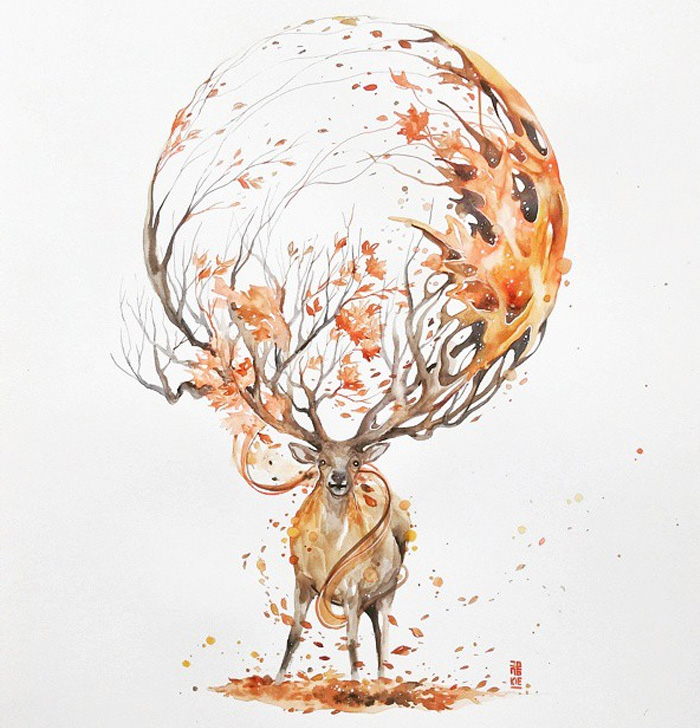

The artwork above is called Best Friend
and the Artist's name is Jongkie. I feel
as if the artwork is telling you that
your best friend is all you need to feel
happiness. After all a man is usually
a dog's best friend and vice versa.
I love this deep watercolor artwork!
The artwork above shows a moose with
special antlers. It shows a girl and
a boy that are playing in the woods.
Instead of drawing the whole woods
this artist drew one thing that lives
inside the woods and drew that instead.
I love this piece because it turns
something simple into something amazing

The artwork above was made by a man named
John Pike. This piece is very serene and
calm, and uses all of the watercolor
tricks to make your artwork look better.
The trees and the waterfallmixed together
shows a beautiful scenery. Pike went
one more step by adding a series a colors
that were on the opposite side of the
color wheel. This is a spectacular artwork.
This ultimate sport is also known as football.
You use your hands and pass to one another.
You can win by getting the most touchdowns
compared to the other team. This is a fun
game that really strains your legs and arms.
It is really competetive and I love it!

This ultimate sport is also known as soccer.
You use your feet and pass to one another.
You can win by getting the most goals
on the other team. This is a fun game
that uses your legs. One thing in the
game that you don't want to get are fouls.
It is really competetive and I love it!

This sport is a sport that mainly uses
your arms and legs. You can win by
having the most runs. A run is when
you go around all four bases. A
really good thing to get in baseball
is a homerun. It is when one person
hits the ball really hard and the
person that hit it get around all four
bases without getting tagged out. This
game is really fun and exciting to play.
Reading is the most easiest thing that
you can do. All you have to do is pick
up a book and read. When I am bored
I usually go to my bed and read. It
helps me calm down and my mind is
refreshed. I love reading and I wish
that everyone could enjoy reading as
much as I do. Reading is my jam!!!